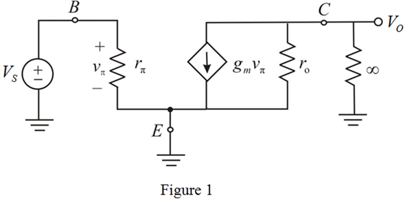

Step 1:
Refer to Figure 6.47 (a) in the text book.
The modified circuit diagram is shown in Figure 1.

Step 2:
Drive the expression for largest possible voltage gain available for a signal source connected to directly to the base and a very high resistance load.
Substitute  for
for  in the equation.
in the equation.

Substitute for  in the equation.
in the equation.
Substitute for  in the equation.
in the equation.
Thus, the expression for largest possible voltage gain,  is.
is.
Step 3:
Determine the value of maximum possible voltage gain for.
Substitute for  and
and  for
for  in the equation.
in the equation.
Thus, the value of maximum possible voltage gain for, is.
Step 4:
Determine the value of maximum possible voltage gain for.
Substitute for  and
and  for
for  in the equation.
in the equation.
Thus, the value of maximum possible voltage gain for, is.